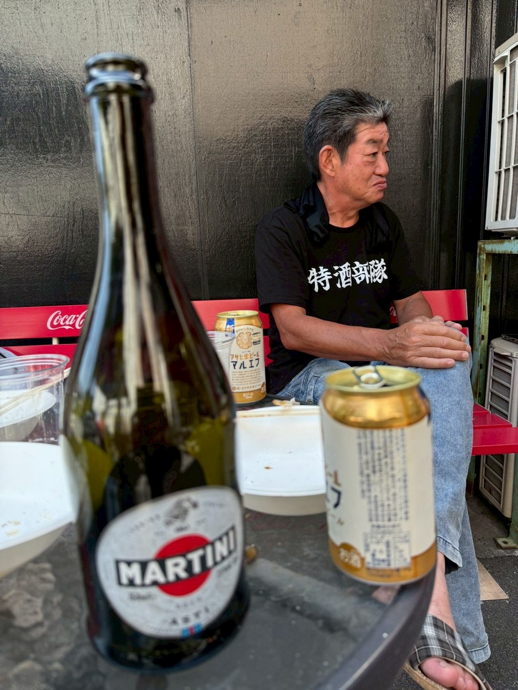
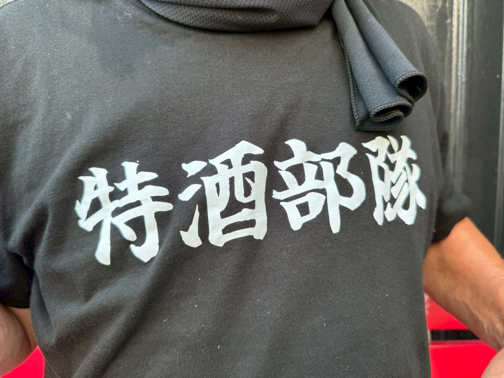
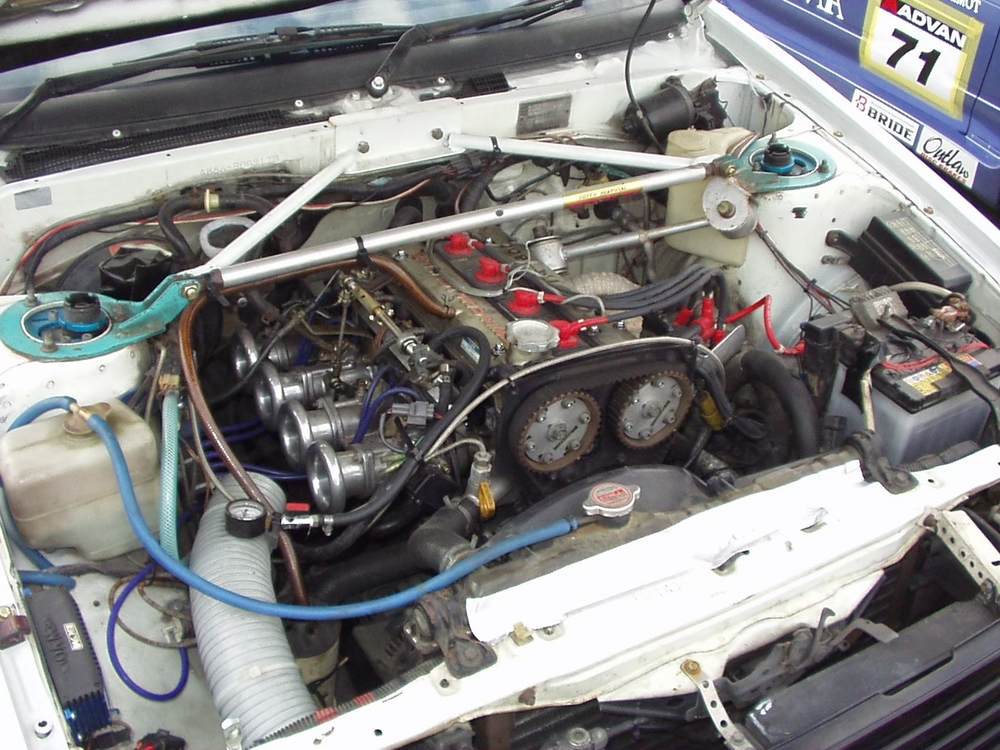
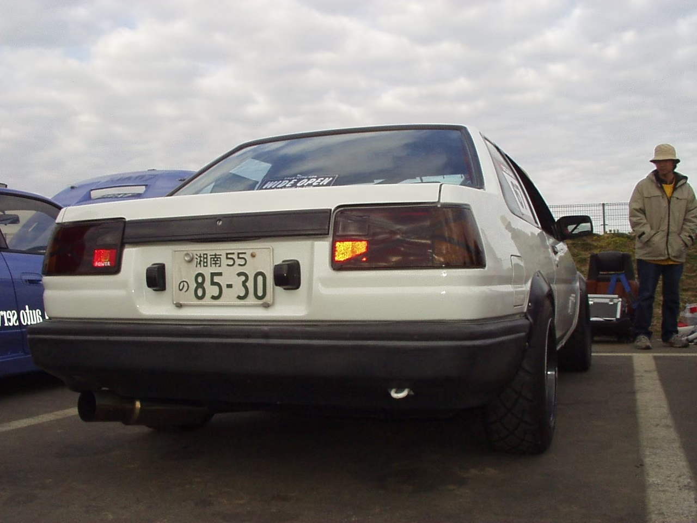
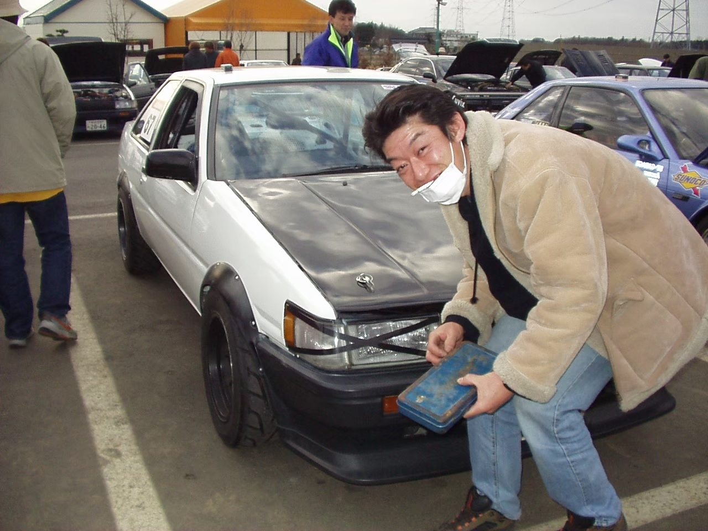

YUKIO
プロフィール
何かひとこと書くスペース

| Car Specs 現在の車の仕様を記載 |
現在の車の写真を追加
ー 軌跡 ー
| Car Specs コンセプト：昔ながらの不良って感じ？ わっかるかな～ エンジン：後期型（140ps）ブロック，AE111ピストンリセス加工，AE101コンロッド，後期型ヘッド燃焼室＆ポート加工，HKS272/264カム，OER4連スロットル，まる秘コンピュータ，クスコタコ足，エキスパート改マフラー，ニューボルトCDI，オイルクーラー，TRD強化クラッチ 足廻り:トキコHTSダンパー，KGMスプリング F:8kg/mm R:6.4kg/mm，ピロテンションロッド，ロアアーム，ピロアッパーマウント，ダンロップD-01J 195/60/14，エンドレスブレーキパッド 他：ボディプチ補強，１０点ロールケージ 自慢：特に無いけど・・・ 負けねぇよ |


